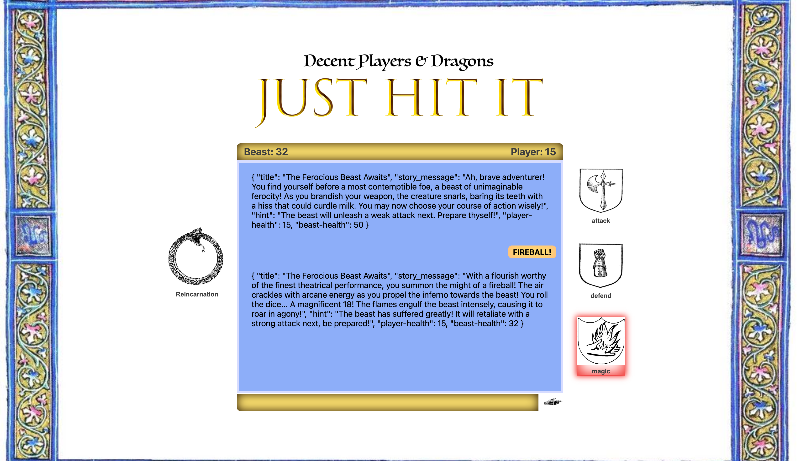

LLM - LLMs and Dragons
 Visit WebsitePen and Paper is too oldschool and you don't want to stand up? Let's do that online! You have no friends to play with? No Problem! You play against AI. I wanted create a quick bossfight against a beast of any kind. In it the Player has to choose between fighting, defending or magic wich can only be used once per game.
The basic trainig of the AI went really well. Likewise was the building of a theme fitting website.
The problems started with cosmetic changes of the LLM Json Output. No matter what I wrote, how often I asked another AI and Fabian or threatend to harm small kitties, the output always looked the same. Frustrating.